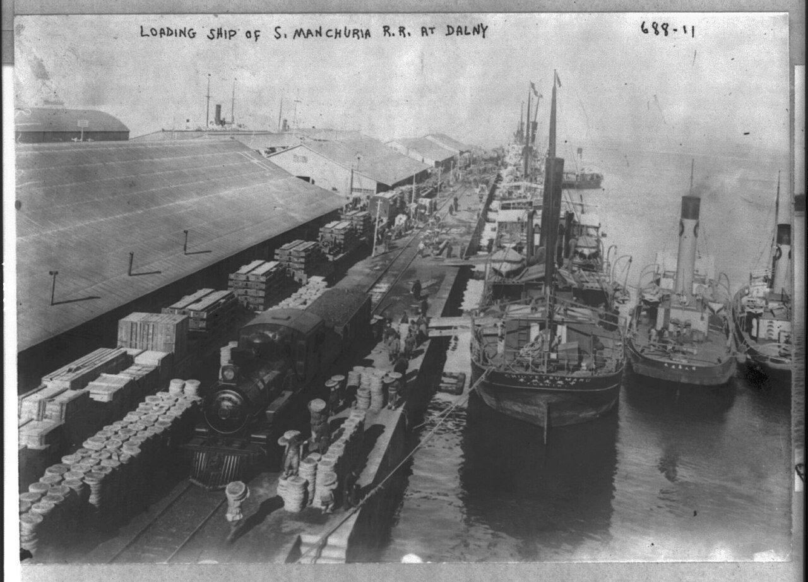
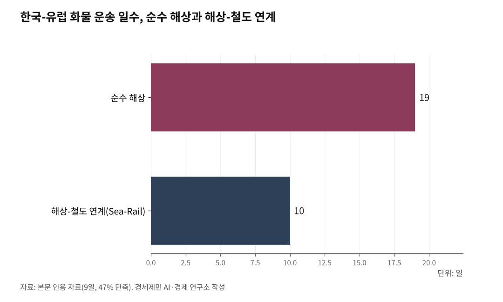

[인천해양산업, 생존기로⑫-하] 남북철도 미지수, 중국 항만을 활용하라
경의선 폭파에 호르무즈 봉쇄까지, 인천항이 돌파구다
경의선 폭파, 남북 철도 연결은 장기 과제가 됐다
AI경세제민=김갑봉 기자 | 상편에서 짚었듯이 경의선 폭파와 9차 노동당 대회가 남북 철도 연결 전망을 사실상 닫았다. 김정은은 한국을 "영원한 적"으로 규정했고, 헌법에서 통일 조항을 삭제했다. 유엔 안보리 대북제재가 유지되는 한, 남북 철도 연결은 제재 예외 승인 없이는 착수조차 할 수 없다. TKR(Trans Korea Railway, 한반도종단철도)을 통해 TCR(Trans China Railway, 중국횡단철도)과 TSR(Trans Siberian Railway, 시베리아횡단철도)로 직결하겠다는 구상은 장기 과제로 남겨둘 수밖에 없다.

그런데 남북 철도 연결이 미지수인 사이, 해상 공급망에서 더 급박한 위기가 터졌다.

호르무즈 해협 봉쇄, 한국 공급망이 흔들린다
2026년 2월 28일 미국과 이스라엘이 이란을 공습했다. 에픽 퓨리 작전(Operation Epic Fury)이었다. 최고지도자 하메네이가 사망했고, 이란 혁명수비대(IRGC)는 호르무즈 해협 통항 불가를 통보했다. 유조선 통행량이 약 70% 급감했고, 150척 이상 선박이 발묶였다. 머스크(Maersk)와 하팍로이트(Hapag-Lloyd) 등 글로벌 해운사가 통항을 전면 중단했다. WTI(West Texas Intermediate, 서부텍사스산 원유 선물) 유가는 60달러 후반에서 3월 9일 111.24달러로 9일 만에 급등했다.
한국은 직격탄을 맞았다. 원유의 70.7%, LNG(Liquefied Natural Gas, 액화천연가스)의 20.4%를 중동에서 수입한다. 대부분 호르무즈 해협을 통과하는 물량이다. 산업연구원은 해협 봉쇄가 3개월 이상 지속되면 국내 제조업 평균 생산비가 최대 11.8% 상승할 것으로 전망했다. 한국무역협회는 해상운임이 최대 50~80% 상승할 수 있다고 분석했다.
문제는 원유만이 아니다. 컨테이너선도 통항을 중단했고, LNG와 화학제품 공급망 전체가 흔들리고 있다. 2023년 홍해에서 후티(Houthi, 예멘 반군 무장세력) 사태로 수에즈 운하 리스크가 부각된 데 이어, 호르무즈 해협까지 막혔다. 세계 해상 물류의 양대 병목이 동시에 위기에 빠진 것이다.
주목할 점이 하나 있다. 이란은 중국 선박에 대해서는 선별적으로 통과를 허용하고 있다. 3월 1일 중국 초대형유조선(VLCC, Very Large Crude Carrier) 뉴비전(New Vision)호가 해협을 통과한 것이 확인됐다. 이란의 선별 통과가 중국에 비공식 면제를 포함한다는 분석이 나온다. 중국 항만과 중국 대륙철도를 활용하는 우회 경로가 전략적 가치를 갖는 이유다.
중국 대륙철도가 단기 대안이다, Sea-Rail(해상-철도 연계)은 이미 작동한다
북한을 경유하지 않고 중국 항만을 활용해 대륙철도에 접속하는 경로가 있다. 인천항에서 카페리(car ferry, 차량과 여객을 함께 싣는 여객화물선)로 중국 항만까지 11~14시간, 중국 내륙에서 TCR과 TSR을 거쳐 유럽까지 14~18일이면 닿는다. 해상으로 수에즈 운하를 거치면 30일 이상 걸리는 거리를 절반 가까이 줄인다.
이 경로는 이미 작동하고 있다. 진인해운이 운영하는 몽골 녹색루트(TMGR, Trans-Mongolian Green Route) 서비스가 대표 사례다. 인천항에서 카페리로 중국 톈진항까지 해상 운송한 뒤, 철도로 몽골 자민우드까지 연결한다. 2024년 처리 실적은 6846TEU(Twenty-foot Equivalent Unit, 20피트 컨테이너 1개 기준 단위)로 전년 대비 68.4% 성장했다. 소요일은 10일이다. 기존 순수 해상 19일 대비 9일, 47%를 단축했다.
인천항 카페리 물동량도 2024년 44만4420TEU로 전년 대비 5.6% 늘었다. 카페리가 Sea-Rail 복합운송의 해상 구간을 담당한다. 중국-유럽 화물열차(中欧班列)는 2023년 연간 1만7000여회 운행하고 누적 188만TEU를 처리했다. 인천항에서 카페리로 중국 항만까지 간 뒤, 이 열차에 화물을 실어 유럽까지 보내는 구조다.
TCR의 공식 기점은 연운항(롄윈강)이다. TCR 화물 전체의 약 90%를 처리한다. 수심 11m 컨테이너부두 2선석, 터미널 면적 16만2000제곱미터를 갖추고 있다. 칭다오와 톈진에서도 TCR 발차가 가능하다. 서중물류는 연운항, 칭다오, 친저우 3곳에서 블록트레인(block train, 직통 화물열차)을 편성하고 있다. 태웅로직스는 2025년 11월 연운항 항만 그룹과 칭다오 해양물류회사 GACOSCO(Qingdao Ocean & Great Asia Logistics)와 TCR 복합운송 경쟁력 강화 양해각서(MOU, Memorandum of Understanding)를 체결했다.
인천에서 칭다오까지 약 590km다. 부산에서 상하이까지 약 870km보다 280km 짧다. 인천에서 웨이하이까지는 약 370km, 카페리로 약 15시간이다. 인천항은 중국 북부 항만과 가장 가까운 한국 항만이다. 중국 대륙철도 접속의 최적 거점이 인천이라는 뜻이다.
부산은 원양, 인천은 대륙... 국가 공급망 두 축
부산항은 원양노선의 중심이다. 태평양과 유럽을 잇는 컨테이너 환적(트랜스십먼트, transshipment, 다른 배로 화물을 옮겨 싣는 것) 허브다. 인천항은 환황해권의 관문이다. 대중국 물동량의 63.7%(2025년)를 담당한다. 부산이 태평양을 바라보는 원양 허브라면, 인천은 환황해와 유라시아 대륙을 잇는 복합물류 허브다.
수에즈 운하와 호르무즈 해협 리스크가 동시에 커지면, 구주와 중앙아시아로 가는 화물은 해상 우회보다 대륙철도가 빠르고 안전하다. 이때 부산신항에서 인천신항으로 연계하고, 인천항에서 중국 대륙철도 기점 항만으로 연결하면 국가 공급망의 두 번째 축이 완성된다. 부산항이 해상 공급망의 중심이라면, 인천항은 대륙 공급망의 중심이 된다. 경쟁이 아니라 분담이다.
한중해운회담 의제화와 열차페리
실행 과제는 분명하다. 한중해운협정에 근거해 정례적으로 열리는 한중해운회담에서 대륙철도 연계 복합운송을 의제로 올리는 것이 과제다. 지금까지 한중해운회담은 카페리 안전관리와 노후 여객선 점검이 주요 의제였다. 호르무즈 위기 이후 의제를 확장할 때다. TCR과 연결되는 중국측 항만 가운데 인프라가 부족한 곳에 철도인입선을 부설하고, 컨테이너 야드를 확대하는 한중 합작 사업을 의제화하는 것이다. 한중합작법인이 터미널운영회사(TOC, Terminal Operating Company)를 운영하는 방안도 검토할 수 있다.
한중 합작 해운사 운영 경험은 이미 35년이 쌓여 있다. 1990년 한중 수교 2년 전, 위동항운유한공사가 한중 합작(50:50)으로 설립돼 인천-웨이하이 최초 카페리 직항로를 열었다. 2023년 2월에는 중국 교통운수부와 한국 국토교통부가 중한 복합운송 시범사업(웨이하이-인천) 양해각서를 체결했다. 한중 간 해운 합작의 제도적 토대와 운영 경험이 갖춰져 있다는 뜻이다.
장기적으로는 인천-웨이하이(약 340km) 구간에 열차페리(train ferry, 철도 차량을 싣고 바다를 건너는 선박)를 띄우는 것이 목표다. 중국은 연태-대련 열차페리(2006년 운항 개시, 총투자비 약 31억위안(약 6120억원), 하루 4편, 척당 화차 50대 수용)를 성공적으로 운영하고 있다. 인천-웨이하이 구간은 기술적으로 실현 가능한 거리다. 전제조건은 두 가지다. 인천신항 철도 인입선 구축과 한중 정부 간 열차페리 운항 협정 체결이다. 인천신항 철도 인입선은 현재 미완공 상태로 제4차 국가철도망구축계획에서 후보노선으로 밀려 있다. 열차페리가 실현되면 인천항은 해상과 대륙을 직결하는 유라시아 복합물류의 핵심 거점이 된다.
경의선이 폭파되고, 호르무즈 해협이 봉쇄되고, 수에즈 운하가 위험해진 지금, 인천항에서 중국 항만을 거쳐 대륙철도로 연결하는 경로는 상상이 아니라 현실이다. 이 경로를 연구하고 전략을 수립할 기관이 인천에 없다는 사실이 문제다.
※ 이 기사는 AI 프로그램 클로드를 활용해 작성했습니다.
참고문헌
·"제22차 한중해운회담 결과", 해양수산부, 2014년 9월 4일, https://www.mof.go.kr/article/view.do?articleKey=2237&boardKey=10&menuKey=376¤tPageNo=1
·"중국 횡단철도", 한국교통연구원(KOTI), https://www.koti.re.kr/user/bbs/northAsiaRsrchBoardView.do?bbs_no=49923
·"2026년 호르무즈 해협 위기", 위키백과, https://ko.wikipedia.org/wiki/2026년_호르무즈_해협_위기
·"위동항운", 위키백과, https://ko.wikipedia.org/wiki/위동항운
·"중국-유럽 화물열차, 개방형 세계 경제에 가속도 붙여", CRI 한국어판, 2026년 3월 19일, https://korean.cri.cn/2026/03/19/ARTI1773904554409490
·"태웅로직스, '중앙아시아·中 물류 경쟁력 강화' MOU 체결", 벤처스퀘어, 2025년 11월 2일, https://www.venturesquare.net/1011984
·"'호르무즈 리스크'에 불확실성 증폭... 트럼프 '4주간 이란 공습'", 머니투데이, 2026년 3월 2일, https://www.mt.co.kr/industry/2026/03/02/2026030215423488747
·"'韓 제조업 원자재 공급망 전반 중동 리스크 노출'... 호르무즈 해협 봉쇄 영향 우려", 중앙이코노미뉴스, 2026년 3월 19일, https://www.joongangenews.com/news/articleView.html?idxno=504033
·"무협 '호르무즈 해협 봉쇄 땐 해상운임 최대 80% 상승'... 정부 '유가·가스요금 철저 관리'", 서울신문, 2026년 3월 1일, https://www.seoul.co.kr/news/economy/2026/03/01/20260301500089
·"호르무즈 해협 봉쇄 위기... 한국 해운·에너지 공급망 총체적 비상", 해사신문, 2026년 3월 1일, http://www.haesanews.com/news/articleView.html?idxno=146096
사진 출처
· [대표사진] George Grantham Bain Collection, "Loading ships of S. Manchuria R.R. at Dalny LCCN2005688530.jpg", 위키미디어 공용, 퍼블릭 도메인, https://commons.wikimedia.org/wiki/File:Loading_ships_of_S._Manchuria_R.R._at_Dalny_LCCN2005688530.jpg
※ 이 기사는 인공지능을 활용해 작성했습니다.
관련기사
- [인천해양산업, 생존기로⑬] 수산 R&D, 부산과 전남엔 있고 인천엔 없다
- [인천해양산업, 생존기로⑫] 남북교류 재개되면, 인천은 준비돼 있나
- [인천해양산업, 생존기로⑭] 6.2GW 자체 전력으로 AI 데이터센터를 돌려라
- [인천해양산업, 생존기로⑪] 10조달러 경제권 관문, 전략도 기관도 없다
저작권자 © AI경세제민 무단전재 및 재배포, AI학습 및 활용 금지